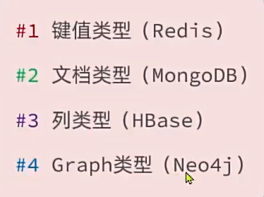
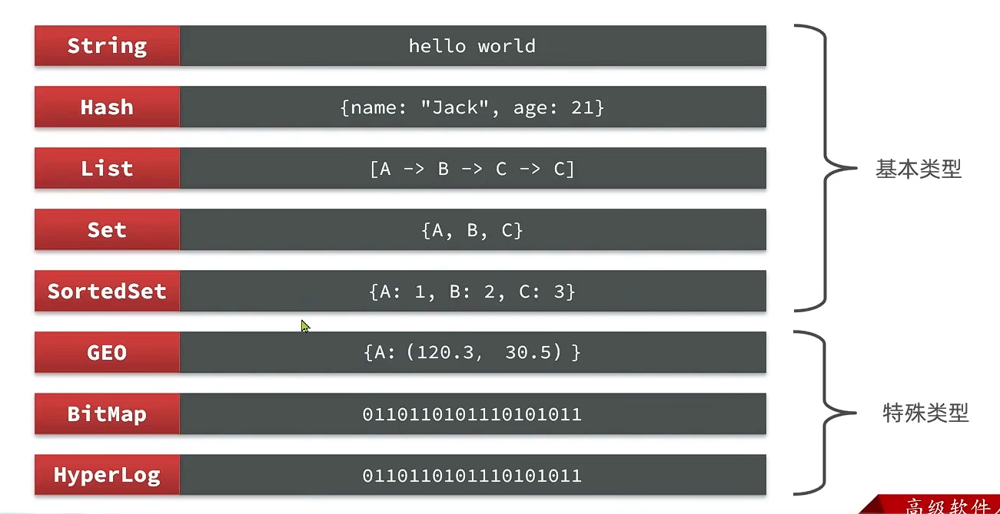
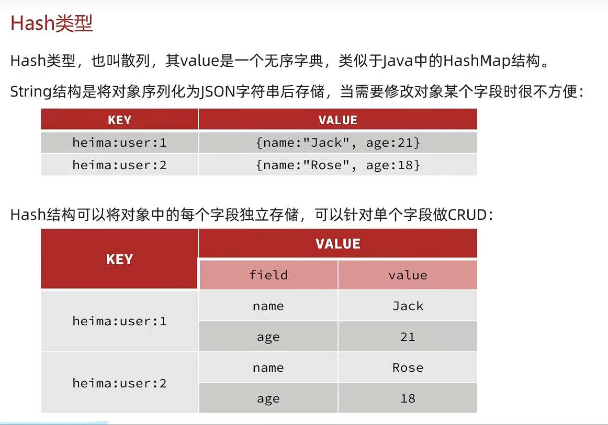
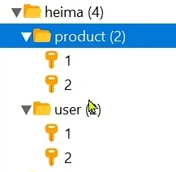

Redis 入门：数据类型与客户端
初识Redis
基于我本地使用 redis :
使用 compose : 容器化管理 redis ;
使用图形化界面 管理 redis :
可以直接使用 Hexhub 实现图形化管理 :
超级方便 ;
使用
docker exec -it redis bash
作用：在已经运行的 Redis 容器内部启动一个 交互式的 bash 终端。
进入的是：容器的操作系统环境（类似于一个轻量级的 Linux 系统）。
你能做什么：执行 Linux 命令，例如 ls 查看文件列表、ps aux 查看进程、cat 查看文件、apk 安装软件（Alpine 系统）、以及运行 redis-cli 等程序。
提示符示例：/data # 或 root@容器ID:/data#
可以理解为：你通过 SSH 登录到了这台“迷你虚拟机”（容器）里。
redis-cli [-h -p -a] []
-h / -p / -a : 访问的redis 的节点 / 访问连接端口默认为 6379 / 指定redis 的访问密码 ;
使用 auth 指定使用密码登陆 ;
也可以使用 auth 指定用户名 密码实现登陆 ;
作用：Redis 的命令行客户端，用于向 Redis 服务器发送命令。
进入的是：Redis 命令交互界面（一个专门与 Redis 通信的 REPL 环境）。
你能做什么：执行 Redis 命令，例如 SET, GET, PING, INFO, CONFIG 等。
提示符示例：127.0.0.1:6379>
可以理解为：你打开了一个专门操作 Redis 的“控制台”。
Redis是一种键值型的NoSQL数据库，这里有两个关键字
- 键值型
- NoSQL
其中键值型是指Redis中存储的数据都是以Key-Value键值对的形式存储
key可以为 id 而Value的形式多种多样，可以使字符串、数值甚至Json
而NoSQL则是相对于传统关系型数据库而言，有很大差异的一种数据库.
认识NoSQL
NoSql可以翻译做Not Only Sql（不仅仅是SQL），或者是No Sql（非Sql的）数据库。
是相对于传统关系型数据库而言，有很大差异的一种特殊的数据库，因此也称之为非关系型数据库。
结构化与非结构化
传统关系型数据库是结构化数据，每张表在创建的时候都有严格的约束信息，如字段名、字段数据类型、字段约束等，插入的数据必须遵循这些约束
而NoSQL则对数据库格式没有约束，可以是键值型，也可以是文档型，甚至是图格式
关联与非关联
传统数据库的表与表之间往往存在关联，例如外键约束
而非关系型数据库不存在关联关系，要维护关系要么靠代码中的业务逻辑，要么靠数据之间的耦合
|
查询方式
传统关系型数据库会基于Sql语句做查询，语法有统一的标准
|
而不同的非关系型数据库查询语法差异极大
|
事务
传统关系型数据库能满足事务的ACID原则(原子性、一致性、独立性及持久性)
而非关系型数据库汪汪不支持事务，或者不能要个保证ACID的特性，只能实现计本的一致性
总结
SQL | NoSQL | |
数据结构 | 结构化(Structured) | 非结构化 |
数据关联 | 关联的(Relational) | 无关联的 |
查询方式 | SQL查询 | 非SQL |
事务特性 | ACID | BASE |
存储方式 | 磁盘 | 内存 |
扩展性 | 垂直 | 水平 |
使用场景 | 1）数据结构固定 | 1)数据结构不固定 |
存储方式
关系型数据库基于磁盘进行存储，会有大量的磁盘IO，对性能有一定影响
非关系型数据库，他们的操作更多的是依赖于内存来操作，内存的读写速度会非常快，性能自然会好一些
扩展性
关系型数据库集群模式一般是主从，主从数据一致，起到数据备份的作用，称为垂直扩展。
非关系型数据库可以将数据拆分，存储在不同机器上，可以保存海量数据，解决内存大小有限的问题。称为水平扩展。
关系型数据库因为表之间存在关联关系，如果做水平扩展会给数据查询带来很多麻烦

认识Redis
Redis简介
- Redis是用C语言开发的一个开源的、高性能的键值对(key-value)数据库，官方提供的数据是可以达到100000+的QPS（每秒内查询次数）。它存储的value类型比较丰富，也被称为结构化NoSql数据库
- NoSql(Not Only Sql)，不仅仅是SQL，泛指非关系型数据库，NoSql数据库并不是要取代关系型数据库，而是关系型数据库的补充
关系型数据库(RDBMS)：MySQL、Oracl、DB2、SQLServer
非关系型数据库(NoSql)：Redis、Mongo DB、MemCached
- Redis应用场景：缓存、消息队列、任务队列、分布式锁
Redis诞生于2009年，全称是Remote Dictionary Server远程词典服务器，是一个基于内存的键值型NoSQL数据库。
特征：
- 键值(Key-Value)型，Value支持多种不同的数据结构，功能丰富
- 单线程，每个命令具有原子性
- 低延迟，速度快(基于内存、IO多路复用、良好的编码)
- 支持数据持久化
- 支持主从集群、分片集群
- 支持多语言客户端
作者：Antirez
Redis官网：https://redis.io/
安装Redis
下载与安装
这里我们在Linux和Windows上都装一下
Windows 版：https://github.com/microsoftarchive/redis/releases
Windows安装Redis
- Windows 版：https://github.com/microsoftarchive/redis/releases
- 直接下载对应版本的
.zip压缩包，直接解压之后
Linux安装Redis
- Linux系统安装Redis步骤：
- 将Redis安装包上传到Linux
- 解压安装包，改成你自己的redis版本，路径我习惯解压到
/usr/local
|
- 安装Redis的依赖环境gcc，我的云服务器已经装过了，本地的Linux还没装
|
- 进入
/usr/local/redis根目录，进行编译
|
- 进入redis的src目录，进行安装
|
redis的服务启动与停止
Linux启动与停止
- 进入到
/src目录下，执行redis-server即可启动服务，默认端口号为6379
|
Linux设置后台运行
- 进入到redis根目录下，修改配置redis.conf文件
|
- 找到
daemonize on字段，将其修改为daemonize yes - 在redis根目录以redis.conf作为配置文件在后台运行
|
Linux开启密码校验
- 还是修改redis.conf配置文件，找到
requirepass这行，将其注释去掉，并在后面写上自己的密码 - 然后杀掉原进程再重新启动
|
- 修改完毕之后还是杀进程，然后重启服务
Linux开启远程连接
- 还是修改redis.conf配置文件，找到
bind 127.0.0.1这行，把这行注释掉 - 之后设置防火墙，开启6379端口
|


- 最后在Windows的redis根目录下，按住Shift+右键打开PowerShell窗口，连接Linux的Redis
.\redis-cli.ext -h 服务器地址 -p 6379 -a 密码 |
Redis数据类型
介绍
Redis存储的是key-value结构的数据，其中key是字符串类型，value有5中常用的数据类型
- 字符串：String
- 哈希：Hash
- 列表：List
- 集合：Set
- 有序集合：Sorted Set

字符串(String)常用命令
命令 | 描述 |
SET key value | 设置指定key的值 |
GET key | 获取指定key的值 |
SETEX key seconds value | 设置指定key的值，并将key的过期时间设为seconds秒 |
SETNX key value | 只有在key不存在时设置key的值 |

哈希(Hash)常用命令
Redis Hash是一个String类型的Field和Value的映射表，Hash特别适合用于存储对象

命令 | 描述 |
HSET key field value / 每个都是完整的键值 | 将哈希表key 中的字段field的值设为value |
HGET key field value | 获取存储在哈希表中指定字段的值 |
HDEL key field | 删除存储在哈希表中的指定字段 |
HKEYS key | 获取哈希表中所有字段 |
HVALS key | 获取哈希表中所有值 |
HGETALL key | 获取在哈希表中指定key的所有字段和值 |
可以创建一个 HashMap , 然后使用 HSet 第二个参数直接传入即可, 现在不带 M 也可以实现多传 ;
列表(List)常用命令
Redis List是简单的字符串列表，按照插入顺序排序
命令 | 描述 |
key value1 [value2] / RPUSH | 将一个或多个值插入到列表头部 使用 L 实现的插入顺序是 和书写顺序相反 使用 R 实现的插入顺序 和 书写顺序一致 |
key start stop / | 获取列表指定范围内的元素 |
key | 移除并获取列表最后一个元素 |
key | 获取列表长度 |
key1 [key2] timeout | 移出并获取列表的最后一个元素 |
集合(Set)常用命令
Redis set是String类型的无序集合。集合成员是唯一的，这就意味着集合中不能出现重复的数据
命令 | 描述 |
SADD key member1 [member2] | 向集合添加一个或多个成员 |
SMEMBERS key | 返回集合中的所有成员 |
SCARD key | 获取集合的成员数 |
SINTER key1 [key2] | 返回给定所有集合的交集 |
SUNION key1 [key2] | 返回所有给定集合的并集 |
SDIFF key1 [key2] | 返回给定所有集合的差集 |
SREM key member1 [member2] | 移除集合中一个或多个成员 |
有序集合(Sorted Set)常用命令
Redis Sorted Set有序集合是String类型元素的集合，且不允许重复的成员。每个元素都会关联一个double类型的分数(score) 。Redis正是通过分数来为集合中的成员进行从小到大排序。有序集合的成员是唯一的，但分数却可以重复。
命令 | 描述 |
ZADD key score1 member1 [score2 member2] | 向有序集合添加一个或多个成员，或者更新已存在成员的分数 |
ZRANGE key start stop [WITHSCORES] | 通过索引区间返回有序集合中指定区间内的成员 |
ZINCRBY key increment member | 有序集合中对指定成员的分数加上增量increment |
ZREM key member [member …] | 移除有序集合中的一个或多个成员 |

通用命令 ( 大部分都可以实现多个使用 )
EXPIRE key 数字. 默认单位是 秒 级别的 , 可以创建一个 以秒为单位代谢的 key ;
● 返回 -1：键存在，但没有设置过期时间（永久有效）。
● 返回 -2：键不存在（可能因为已经过期被自动删除，或者该键从未被创建）。
● 返回 大于 0 的数字：键还有多少秒存活。
命令 | 描述 |
KEYs pattern | 查找所有符合给定模式(pattern)的key |
KEYS * / KEYS a* | 查找全部的key / 查找全部开头为a的key |
EXISTs key | 检查给定key是否存在 |
TYPE key | 返回key所储存的值的类型 |
EXPIRE diaosi:user:1 10 | 设置剩余的key的剩余保存时间 |
TTL key | 返回给定key的剩余生存时间(TTL, time to live)，以秒为单位 |
MSET [名字 名字 名字] | 批量产出 key字段 |
DEL key/[名字 名字 名字 ] | 该命令用于在key存在是删除key / 批量删除 |
SELECT 表名 | 实现切换当前使用的数据库表 ; |
Help @选择模块 | 可以快速获取到使用的模块 |
- NX：Only set if key does Not eXist（键不存在时才设置）
- XX：Only set if key eXists（键存在时才设置）
- EX：设置过期时间（单位：秒）
- PX：设置过期时间（单位：毫秒）
创建 key 时 可以设置层名 实现分层 查询 set com:user:1 ; 实现放置包名 ;
这样创建 可以生成层级结构 :
创建出的层级样式 只有使用 了 空格才会开始区分 key , value ;
可以实现 快捷管理 :

更多详细的命令可以查看官方文档：https://www.redis.net.cn/order/
Java中使用Redis
简介
java客户端 ;
Redis的Java客户端有很多，官方推荐的有三种
JedisLettuceRedissonSpring对Redis客户端进行了整合，提供了SpringDataRedis，在Spring Boot项目中还提供了对应的Starter，即
spring-boot-starter-data-redis
<http://github\.com/redis/jedis>
Jedis
- 使用Jedis的步骤
- 获取连接
- 执行操作
- 关闭连接
- 在此之前我们需要导入一下Jedis的maven坐标
|
- 编写测试类 , 命名时不要和 依赖名 重复 ;
|
- 输出结果
num:4204000400
name:Jerry
age:18
Hades
- Jedis我们了解一下即可，大多数情况下我们还是用SpringDataRedis的
3.1.2.连接池
Jedis本身是线程不安全的，并且频繁的创建和销毁连接会有性能损耗，因此我们推荐大家使用Jedis连接池代替Jedis的直连方式。
package com.heima.jedis.util;
import redis.clients.jedis.*;
public class JedisConnectionFactory {
private static JedisPool jedisPool;
static {
// 配置连接池
JedisPoolConfig poolConfig = new JedisPoolConfig();
poolConfig.setMaxTotal(8);
poolConfig.setMaxIdle(8);
poolConfig.setMinIdle(0);
poolConfig.setMaxWaitMillis(1000);
// 创建连接池对象，参数：连接池配置、服务端ip、服务端端口、超时时间、密码
jedisPool = new JedisPool(poolConfig, "192.168.150.101", 6379, 1000, "123321");
}
public static Jedis getJedis(){
return jedisPool.getResource();
}
}
使用了下面的配置编写redis 的话 , 只需要 更改 一下 .yml配置文件就行 ;
Spring Data Redis
SpringBoot项目中，可以使用SpringDataRedis来简化Redis（常用）
Spring Data Redis中提供了一个高度封装的类：RedisTemplate，针对jedis客户端中大量api进行了归类封装，将同一类型操作封装为operation接口，具体分类如下：
ValueOperations：简单K-V操作
SetOperations：set类型数据操作
ZSetOperations：zset类型数据操作
HashOperations：针对map类型的数据操作
ListOperations：针对list类型的数据操作
使用SpringDataRedis，我们首先需要导入它的maven坐标
|
- 之后重新设置一下序列化器，防止出现乱码，在config包下创建
RedisConfig配置类
|
- 随后配置一下连接redis的相关配置
|
1. String类型数据操作
|
输出结果如下，由于name已经存在，故Kyle设置失败，最后返回false，10秒过后，我们再去redis中get name，则输出nil，表示不存在
Hades
9527
false
2. Hash类型数据操作
|
输出结果如下
name:Hades
age:18
hobby:Apex
$$$$$$$$$$$$$$$
name
age
hobby
$$$$$$$$$$$$$$$
Hades
18
Apex
3. List类型数据操作
|
输出结果如下
D C B A
D C B A
0
4. Set类型数据操作
|
输出结果如下，符合预期
d b c a
$$$$$$$$$$$$$$$$$$$
d a
5. ZSet类型数据操作
|
输出结果如下
b
c
a
$$$$$$$$$$$$$$$$$$$$$$$$$
c
a
b
$$$$$$$$$$$$$$$$$$$$$$$$$
c
- 通用的数据类型操作
|
输出结果如下
tmp
name
4204000400
stu
myData
$$$$$$$$$$$$$$$$$$$$$$$$$
false
$$$$$$$$$$$$$$$$$$$$$$$$$
tmp
name
4204000400
stu
myData
$$$$$$$$$$$$$$$$$$$$$$$$$
SET
3.2.2.自定义序列化
RedisTemplate可以接收任意Object作为值写入Redis：
使用的底层 是 Object 流 :
ObjectOutputStream : 用的 输出流 ;
只不过写入前会把Object序列化为字节形式，默认是采用JDK序列化，得到的结果是这样的：
下面的就是 key , value : 全部 都被序列化了 .

缺点：
- 可读性差
- 内存占用较大
我们可以自定义RedisTemplate的序列化方式，代码如下：
@Configuration
public class RedisConfig {
@Bean
public RedisTemplate<String, Object> redisTemplate(RedisConnectionFactory connectionFactory){
// 创建RedisTemplate对象
RedisTemplate<String, Object> template = new RedisTemplate<>();
// 设置连接工厂
template.setConnectionFactory(connectionFactory);
// 创建JSON序列化工具
GenericJackson2JsonRedisSerializer jsonRedisSerializer =
new GenericJackson2JsonRedisSerializer();
// 设置Key的序列化
template.setKeySerializer(RedisSerializer.string());
template.setHashKeySerializer(RedisSerializer.string());
// 设置Value的序列化
template.setValueSerializer(jsonRedisSerializer);
template.setHashValueSerializer(jsonRedisSerializer);
// 返回
return template;
}
}
所以使用前最好修改一下 RedisSerializer 的序列化对象的方式 :
处理 JDK , 可以使用 StringRedisSerializer , GenericJackson2JsonRedisSeriallizar ;

展示代码中设置的 key 可以实现 String转型 , value 可以实现使用 JSON 实现转型;
整体可读性有了很大提升，并且能将Java对象自动的序列化为JSON字符串，并且查询时能自动把JSON反序列化为Java对象。不过，其中记录了序列化时对应的class名称，目的是为了查询时实现自动反序列化。这会带来额外的内存开销。
因为内部需要实现反序列化返回 JSON 数据 --> String 类型 ;
需要使用 类的类型存储内部 数据 ;
3.2.3.StringRedisTemplateStringRedisTemplate
开始解决携带 类本身定义 的 繁杂问题 , 还要处理反序列化 问题 ;
为了节省内存空间，我们可以不使用JSON序列化器来处理value，而是统一使用String序列化器，要求只能存储String类型的key和value。当需要存储Java对象时，手动完成对象的序列化和反序列化。
[原笔记图片附件缺失：assets/Ip9TKSY.png]
因为存入和读取时的序列化及反序列化都是我们自己实现的，SpringDataRedis就不会将class信息写入Redis了。
这种用法比较普遍，因此SpringDataRedis就提供了RedisTemplate的子类：StringRedisTemplate，它的key和value的序列化方式默认就是String方式。
省去了我们自定义RedisTemplate的序列化方式的步骤，而是直接使用：
@Autowired
private StringRedisTemplate stringRedisTemplate;
// JSON序列化工具 , 可以使用自己熟练使用的转化JSON 工具 ;
private static final ObjectMapper mapper = new ObjectMapper();
@Test
void testSaveUser() throws JsonProcessingException {
// 创建对象
User user = new User("虎哥", 21);
// 手动序列化
String json = mapper.writeValueAsString(user);
// 写入数据
stringRedisTemplate.opsForValue().set("user:200", json);
// 获取数据
String jsonUser = stringRedisTemplate.opsForValue().get("user:200");
// 手动反序列化
User user1 = mapper.readValue(jsonUser, User.class);
System.out.println("user1 = " + user1);
}
手动实现序列化和反序列化 ,常规开发完全够用, 支持多线程安全 ;
@Autowried
private StringRedisTemple stringRedisTemple ;
private static final ObjectMapper mapper = new ObjectMapper() ;
@Test
void testSaveUser() {
User user = new User() ;
String json = mapper.writeValueAssString(user) ;
//存储到redis 中去 ;
stringRedisTemple.opsForValue().set("user:200" , json) ;
String user1 = --> 获取到 get ;
User Json = mapper.readValue(user1 , User.class) ;
输出即可 ;
}